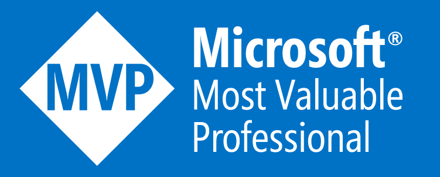

A team is more than a collection of people. It's a process of give and take.
Barbara Glacel & Emile Robert Jr.
Ben, born in 1987, develops high-scalable and performance-focused web- and cloud applications based on ASP.NET, C# /.NET and Azure.
Started with TCL/TK in 2001 he develops with c# /.NET since 2002 and has specialized in Web applications with ASP.NET MVC in 2007.
Mainly, he lives in Stuttgart, Germany. For private reasons he spends much time Stockholm/Sweden. In addition to German, Ben speaks English and Swedish.
He started SchwabenCode, a .NET focused tech-blog. Also he has released a lot of packages and projects on NuGet and is an active moderator on the largest german C# forum MyCSharp.
Ben is the developer of QuickIO.NET and present on GitHub as SchwabenCode and BenjaminAbt

July, 2015 Ben became
Microsoft MVP.
Read Ben's Blog or get in touch now.
Fabian was born in Germany and started working in Switzerland in 2011. He is developing ASP.NET MVC/WebAPI web applications and WPF (MVVM) desktop applications, is active moderator on MyCSharp and one head behind DeveloperCircle.net
Beside the .NET-Framework with C# for web and non web applications, Html5, Angular.js, Ionic & Cross Platform development in general are only some techniques Fabian is very interested in.
The agile development of software is also a main point which has his attention. With a PSD-Certificate and SCRUM-Master experience SCRUM really got his focus and he likes to talk about it and everything which is connected (TFS, TDD etc.).
Fabian started his own NuGet-Area here and will blog and publish NuGet packages under the name offering.solutions. He is also present on GitHub
October, 2015 Fabian became Microsoft MVP.
Read Fabian's Blog or get in touch now.
A team is more than a collection of people. It's a process of give and take.
Barbara Glacel & Emile Robert Jr.